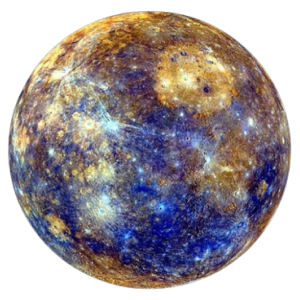
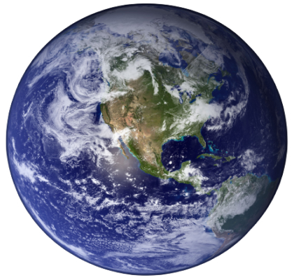
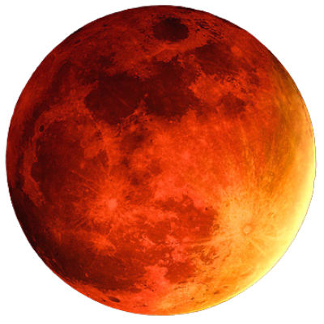
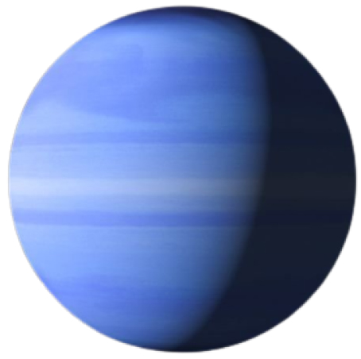

Ближайшая к Солнцу планета Солнечной системы. Вращается вокруг Солнца за 87,969 земных суток. Меркурий принадлежит к внутренним планетам, поскольку его орбита лежит ближе к Солнцу, чем пояс астероидов. После лишения Плутона статуса планеты Меркурий является самой маленькой планетой Солнечной системы.
Планеты солнечной системы

Меркурий

Венера
Вторая от Солнца и шестая по размеру планета Солнечной системы. Период обращения вокруг Солнца - 224,7 земных суток. Названа в честь Венеры, богини любви из римского пантеона. Это единственная из восьми планет Солнечной системы, получившая название в честь женского божества. По размеру почти такая же, как Земля.

Земля
Третья от Солнца планета Солнечной системы, единственная планета, на которой известна жизнь, дом человечества. Земля принадлежит к планетам земной группы и является самой большой из этих планет в Солнечной системе. Землю иногда называют миром, латинским названием Терра или греческим - Гея.

Марс
Четвертая планета Солнечной системы по расстоянию от Солнца и седьмая по размеру и массе. Названа в честь Марса – древнеримского бога войны. Иногда Марс называют «красной планетой» из-за красного цвета поверхности.
Юпитер
Пятая от Солнца и самая большая планета Солнечной системы. Расстояние Юпитера от Солнца изменяется в пределах от 4,95 до 5,45 а. о. (740-814 млн км), среднее расстояние 5,203 а. о. (778 млн км). Вместе с Сатурном, Ураном и Нептуном, Юпитер классифицируют как газового гиганта.
Сатурн
Шестая по удаленности от Солнца и вторая по размерам планета Солнечной системы. Сатурн быстро вращается вокруг своей оси (с периодом – 10,23 часа), состоит преимущественно из жидкого водорода и гелия, имеет толстый слой атмосферы. Вокруг Солнца Сатурн вращается за 29,46 земных лет на среднем расстоянии 1427 млн. км. Экваториальный диаметр верхнего предела облаков – 120 536 км, а полярный – на несколько сотен километров меньше.
Уран
Седьмая от Солнца большая планета Солнечной системы, принадлежащая планетам-гигантам. Диаметр Урана в 4 раза, а его масса — в 14,5 раза больше земных, что делает его третьей по диаметру и четвертой по массе планетой Солнечной системы.

Нептун
Планета Солнечной системы, восьмая по удаленности от Солнца. Она четвертая по размеру в Солнечной системе, третья по массе и относится к планетам-гигантам. Ее орбита пересекается с орбитой Плутона в некоторых местах. Также орбиту Нептуна пересекает комета Галлея. Масса Нептуна в 17,2 раза, а диаметр экватора в 3,9 раза больше земного. Планета названа в честь римского бога морей.